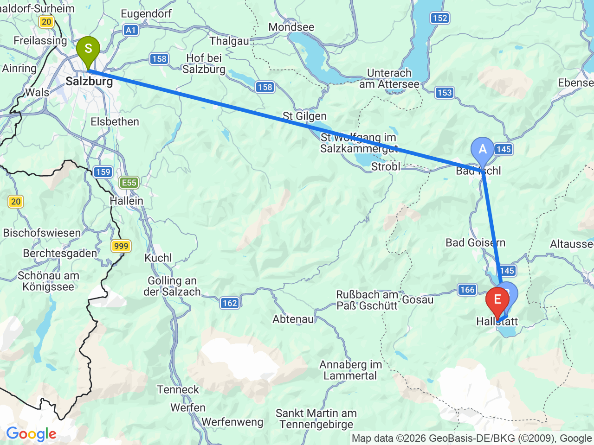
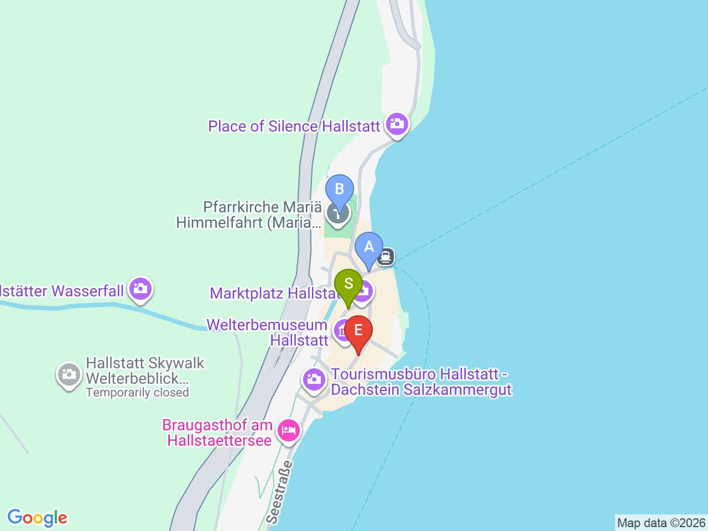

備用方案
世界遺產湖畔小鎮：哈修塔特一日遊
巴士轉火車再轉渡輪，抵達明信片級的湖畔山城，悠閒逛一整天
💱哈修塔特車站↔小鎮的渡輪（Stefanie號）不是每10分鐘一班，而是配合火車時刻發船（大約每班火車到站前後各一班，火車本身可能一小時才一班），船程本身約10分鐘。現金付款、船上直接買票（單程€4／來回€8），不能也不需要事先預約；車站那側沒有ATM，建議先備好現金
⏰這是備用方案，目前沒有排進9/13-9/17薩爾茲堡正式行程（現在的Day32改成Werfen冰洞+鷹之城堡）；如果之後想換回這個方案，記得同步調整manifest.yaml跟前後幾天的安排
薩爾茲堡↔哈修塔特

哈修塔特小鎮景點區域

固定時間行程DAY backup-hallstatt
| 時間 | 地點 | 地點 (英文) | 交通方式／班次 | 價格 | 預計停留(分鐘) | 備註 |
|---|---|---|---|---|---|---|
| 07:00 | 薩爾茲堡中央車站搭150路巴士前往 Bad Ischl | 巴士約90分鐘 | 每小時約1-2班，確切時刻請出發前查詢 | |||
| 08:30 | Bad Ischl 轉乘火車前往 Hallstatt | 火車約15-20分鐘 | 建議預留轉乘時間 | |||
| 08:55 | 抵達 Hallstatt 車站，轉搭渡輪(Stefanie號)過湖 | 1Hallstatt Bahnhof, Austria | 船程約10分鐘，配合火車到站時刻發船（不是每10分鐘一班） | 單程€4／來回€8，現金 | 車站在湖對岸，這段渡輪是唯一進小鎮的方式；現金付款、船上直接買票，不能預約 | |
| 09:10 | 抵達哈修塔特小鎮 | 2Hallstatt, Austria | ||||
| 16:30 | 搭渡輪返回車站 | 船程約10分鐘，配合返程火車時刻發船 | 建議提前10-15分鐘到船邊候船 | |||
| 17:00 | 火車返回 Bad Ischl | 火車約15-20分鐘 | ||||
| 17:30 | 巴士150返回薩爾茲堡 | 巴士約90分鐘 | ||||
| 19:00 | 抵達薩爾茲堡 |
彈性探索景點DAY backup-hallstatt
| 地點 | 地點 (英文) | 預計停留(分鐘) | 價格 | 備註 |
|---|---|---|---|---|
| 市集廣場 | AMarktplatz, Hallstatt, Austria | 約30分鐘 | 免費 | 小鎮核心，彩色房屋林立，每天有鹽品試吃 |
| 福音教會（Evangelische Pfarrkirche） | BEvangelische Pfarrkirche Hallstatt, Austria | 約20分鐘 | 免費 | 1863年白色尖塔教堂，緊鄰湖畔，明信片經典畫面的主角之一 |
| 湖濱散步（含經典拍照觀景點） | CHallstatt, Austria | 約45分鐘 | 免費 | 比市中心安靜，教堂+彩色房屋+湖景+雪山的經典角度都在這一帶步道上 |
| 白骨教堂（Beinhaus） | DBeinhaus, Hallstatt, Austria | 約20分鐘 | 約€2-3 | 16世紀起收藏600多個居民頭骨，彩繪裝飾很特別，就在天主教教區教堂墓園旁 |
| 哈修塔特世界遺產博物館 | FHallstatt Museum, Austria | 約45分鐘 | 約€10-12 | 展示7000年前哈修塔特製鹽文化史、鹽礦出土文物、1750年大火重建歷史 |
| 午餐：湖畔餐廳 | 見上方三餐資訊 | |||
| Skywalk 觀景台 + 鹽礦坑（選項，較花時間） | GSalzwelten Hallstatt, Austria | 約150-180分鐘 | 約€30-35（含纜車+導覽） | 搭 Salzbergbahn 纜車上山，可看Skywalk觀景台+世界最古老鹽礦坑導覽，時間不夠可以只搭纜車看觀景台就好 |
| Rudolfsturm 觀景台 | HRudolfsturm, Austria | 約30分鐘 | 含在纜車套票內 | 跟Skywalk/鹽礦坑同一個纜車站，山頂上的瞭望塔改建餐廳，view很好，可以順道安排午茶或簡餐 |
每日三餐
午餐
湖畔餐廳（自由選擇）約 €15-25／人
Marktplatz 周邊或湖畔都有不少景觀餐廳，用餐時間可以邊吃邊看湖景，不特別指定店家
晚餐
薩爾茲堡老城區餐廳（自由選擇）約 €15-25／人
回程通常已經傍晚，回薩爾茲堡後就近解決
住宿資訊
Austria Trend Hotel Europa Salzburg
📍 Rainerstraße 31, 5020 Salzburg